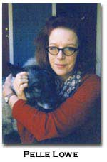

"Trying
to forget about what you are told
you can or cannot do" : a conversation
with filmmaker Pelle Lowe
by Camille Norton
 |
 |
CN: Laura Mulvey described Maya Deren as "the mother" of avant-garde cinema. Do you agree with Mulveys characterization of Deren? Could we talk about the relationship you might have with Derens work?
PL: Its difficult for me to think about the avant-garde in cinema in relation to Maya Deren only, especially since my work has been so profoundly influenced by the avant-garde that was created by Dada. One of the key Dada figures was a woman named Emmy Hennings, whose voice had the legendary quality of being able to enter listeners and transform them. Early avant-garde was based on the voice as a form of embodied resistance to the kinds of rationalism that led to the First World War. So, I really think the avant-garde starts there. I also find it difficult to think of experimental film in visual terms only because my own films dont really begin with the visual. And its easier for me to think of Deren as, for example, an originator, than as a mother which is a highly gendered term, in that there has also to be a father.
CN: Right, right.
PL: The other thing is that Maya Deren came to cinema through her experience as a dancer, and through really trying to understand embodiment. The experience of the body played into these sorts of altered states that she was trying to speak about through cinema. I think that one of her most avant-garde works had to do with her filming of the practices of Voudon.
CN: Described in The Divine Horsemen, right?
PL: Yeah, that was the book. Her footage was eventually collected by her friend, Ron Rice, I think. She studied with Gregory Bateson, one of the early theoreticians of consciousness and what we now call "otherness." She had this extraordinary experience of being allowed into the practice of possession, which she writes about in The Divine Horsemen as a riveting, terrifying, and ultimately liberating experience. What interests me about her as well as what interests me about Emmy Hennings is that Deren was a woman who fearlessly let herself be taken possession of by energies over which she had no control. She certainly danced in those places I was attracted to and terrified of in my own life. So here was a woman who was potentially capable of meeting me and, how should I say this (pause) her own courage challenged me in a certain sense to take personal risks with my own consciousness in filmmaking and performance. But, the performance came before the filmmaking.
CN: For you or for Deren?
PL: For me, yes and I believe this was also the case for Deren. She performed in her own films and she was also interested, it seems to me, in understanding the syntax and logic of dream language.
CN: She wrote that one of the attractions of film was that it allowed her to work with the medium of time and space. She was clearly interested in the fact that film language was inherently a poetic language. I wonder what it was about film that allowed her to try to reproduce the phenomenon of alterity.
PL: Deren, as a dancer, would necessarily have been interested in issues of time and space, but I think her work with Bateson also implied that her concepts of time and space had cultural relevance beyond what was accepted in New York or in the United States or in the West. She pushed herself to explore other forms of time, other forms of space.
CN: Well, it seems to me that Derens exploration of non-Western experiences of space and time does help us define the difference between avant-garde or experimental film and mainstream film. Let me ask you a general question, Pelle. How would you define avant-garde cinema? What does it do and what does it ask the viewer to do? What is avant-garde cinema today?
PL: First of all, I think that term is regarded now as an archaism. I dont necessarily regard it that way. The term "avant-garde" had a kind of military meaning, related to the experience of the First World War, of the first "shock troops" in history.
CN: Yes, the "shocked troops." Were the troops shocked or were they determined to shock?
PL: Wonderful. Both of course, and literally, given electroshock and forced back into the war. There has been a lot of writing about the experience of shock but this seems to be 20/20 hindsight to me. The people speaking about the avant-garde were living it in a direct way. I dont think a current avant-garde lives on that edge or has that experience. The shock, if there is any sense of shock, seems repressed. I think there is still a need for "shock troops" in the arts, but they may not come from universities or the galleries or arts establishment. I think they come from the margins, from the experience of marked people. People marked by wars, by exploitation, by the experience of chronic fatigue that is the experience of being used industrially. The shock of war is experienced on industrial fronts, at the level of people who are virtually enslaved to produce the technologies we take for granted. I think that were these voices liberated, they would be the true avant-garde.
CN: Well, we need a new vocabulary. Were using the term "war," as it was defined by Modernism, but were talking about our own contemporary moment, right? The seizure of late stage capitalism that has us all in its thrall? Maybe we should shift the notion of an "avant-garde," or an experimental cinema from a political reference to an aesthetic or technical description. When you talk to students who are not already film students, how do you define the genre of experimental film? What makes a film experimental?
PL: I try to define an experience using whatever means I have at hand to say what I had been taught not to say. To voice things I feel in my body and have not heard articulated in culture.To my way of thinking, the making of experimental works simply means trying to forget about what you are told you can or cannot do with an idea.
CN: Isnt it interesting how this kind of work is perceived as "difficult" by the mainstream, as difficult or weird or not film or poetry at all? It sometimes seems strange to share a language with such a small group of people.
PL: The experiment is not in the making of the work. The experiment is finding out who resonates with your work. It is an act of faith to say that I am going to speak for myself in order to see where who hears me. Where are the people who speak my language? Thats the real experiment.
CN: Yes, yes.
PL: Then taking what you have done in the dark for yourself and putting it out, being that vulnerable just in order to see whether there are other people who can catch that slender line that you have cast.
CN: So the experiment is a process and not a technique? But doesnt experimental film demand something else from the viewer? A way of reading or receiving images?
PL: To tell you the truth, the most experimental work I have seen lately is not in cinema. It was computer generated. An English artist named David Larcher did it. He was using cliches of high tech video along with what we call artifacts or noise in video, glitches and elliptical texts in a brilliant way. I wish you wouldnt ask me this because I cannot answer it well.
CN: Okay maybe we can answer it by talking about your work more specifically. Lets talk about what you were doing in Chintz (1990). You seem to have two distinct streams going on in your films, a sound stream and a visual stream. Can you talk a bit about the way that you used sounds here? For example, the film begins with jungle sounds, and then it opens into a Gilbert and Sullivan opera (laughing). It sounded very colonial or imperial to me, Then you use this song "the flowers that bloom in the spring"
PL: Tra la!
CN: And then we hear the baying of wolves laid on top of the image of undulating chintz draperies--my favorite moment in the film. Nature entrapped by visual and aural cliches. And of course the sound stream goes on and on. How does sound inspire the way you work with images or how do images inspire your choices of sound?
PL: I guess we are getting back to poetry in film because I never really know which I start with. Chintz was a mid-life crisis film, quite frankly. It was utterly menopausal.
I had had a sudden realization that as an older woman I was becoming quite invisible culturally. I felt an enormous amount of regret about the way in which I had allowed myself to be defined, as a young woman, by the reaction of others. I felt that I had been colonized in a weird way and then I also felt suddenly marginalized, as if I was someone who was no longer of use to the colonial interests. So Gilbert and Sullivan, I dont know how they came to mind. Perhaps I was listening to a radio show, but I was struck by the fact that they were writing these operettas at the height of British colonialism and yet there seemed to be a subversive content to their work.
In any case, I found myself wandering around New York City and my plan was to get as drunk as possible and to get lost in the subway system. And here is what is strange. Every time I emerged from the subway I seemed to know where I was. What a weird experience. It was as if I couldnt escape what was happening to me, or escape knowing where I was in a city that had always seemed foreign to me. A certain self-knowledge that accrued with a sudden knowledge of place. So, having failed at getting lost I found a cheap hotel. It seems it was a welfare hotel, although it was listed in the guidebook as "a hotel where women stay." And it was called the Empire Hotel (laughs).
CN: Perfect.
PL: I shot a lot of the scenes there. A lot of the camera movement had to with the fact that I was either drunk or hungover or both. Chintz, of course, refers to the cloth I always associated with old ladies as a child. Chintz also means "cheap," but the origin of the word came from colonial England, which imported fabrics from India that were made for quick consumption. This concept of feeling "cycled through" a culture that defined me as a woman and then suddenly spit me out was the basis for making this film. The disjunction of sound and image has always seemed right to me at the time since nothing that I was seeing seemed to match up with anything that I was thinking.
CN: You once told me that you edited to music and that listening to music not necessarily something you were putting into a soundtrack--really had an effect on the way you were cutting a film and working with images.
PL: I cant say that Ive ever been a great fan of Gilbert and Sullivanit was the perversity that arose at the momentmaybe an act of self-hatred.
CN: But theres also something intuitively right about that choice, since, in fact, youre talking about being colonized as a middle-aged woman, a woman who winds up staying in the Empire hotel. Those connections seem to fit brilliantly with the Gilbert and Sullivan music.
PL: I took some of my images from Valentinos The Sheik--a wonderful and totally absurd film about British gentlemen imagining themselves as dashing sheiks. I felt that whatever potential I had for being exotic had been permanently lost.
CN: Theres a comical juxtaposition between the Valentino footage and the footage of your bedsheets in the bed youre staying in--this movement between his desert and yours, between the hyperbole of Valentino and the abjectness of the moment youre documenting in this rat-trap hotel.
PL: The text of the music has to do with unrequited passion and so the way that the sheets folded into the desert was quite convenient in terms of cutting, but I had also intended to imply the desert of the empty bed. I went several times to film at the glass flower collection at the Peabody Museum at Harvard, which struck me as a purely nineteenth century idea. I mean, who on earth would ever spend so much time blowing highly detailed glass flowers? I had considerable difficulty filming there. I had to go in several times with my camera concealed. Why this was true I dont really understand.
CN: They wouldnt allow you to take pictures?
PL: NoBut I felt myself so much like a glass flower--as if Id lost my own real smellor my youthful smellas if I were kind of being embalmed. So it seemed important to me to use this metaphor about a kind of artificial sexualitya form of sexuality that had been made artificial by naming it and defining it in a very limiting way.
CN: Its artificial and its also kitsch.
PL: Its kitsch.
CN: Its kitschjust like chintz is.
PL: And so to my mind was the music I used in the ending. The rosesI photographed them in a very flat light to imitate the traditional patterns on chintz, but also to talk about the traditional sexual implications of the rose and in particular of the dying rose. I can remember going to this rose garden in November and photographing them as they were dying. The sound that you hearthe screaming soundis the sound of a teakettle boiling over, a kind of metaphor for my own alienated sexuality.
CN: How much of that wonderful juxtaposition of thingssheets and Valentino, music especiallyhow much of that is just luck, accident? How much is planned out?
PL: Well this film was a more rationalized construction than films that I think of as more major works. Really, I think my best work comes from a more intuitive level but it was something I needed to make. I work in extreme conditions, when I cant seem to work any other way. I take the materials of my life, put them out on the table and say "okay here is this piece and that piece." Like a puzzle. "I think Ill go out and make this other piece," and add it in. But really, the construction of that film was somehow resembled more of a waking consciousness, unlike the state I was in when I worked on Earthly Possessions.
CN: Lets talk about Earthly Possessions. (1992). It seems to represent a real change in your film work. What happened for you as an artist in the making of that film?
PL: I began work on Earthly Possessions during the Gulf War, which really has nothing to do with the content of the film except that I felt that the Gulf War arose as a result of a kind of repressed refusal to grieve over the Vietnam War. In thinking about it, I realized I had repressed, as an artist, my own grieving for the loss of my daughter.
CN: Kashi.
PL: Yes. And the other major impetus as you may know had to do with a piece of poetry you shared with me that touched me enormously. The language seemed to intuit my own experience of loss on such a direct level that it gave me permission to think of myself as being capable of making a film about something that I thought was unspeakable in any other way. Im speaking about the eroticism that arises out of intense grief. One is expected to suffer loss in a certain way and to eliminate other impulses, such as sexual desire or sexual impulsiveness. I started thinking about this when I started thinking about the Gulf War, about all the women who lost their lovers, all the women who were murdered in this war. The fact that it was not spoken about as loss, but as "collateral damage," was unbearable to me. I had to speak. I had to find a way of addressing a complicated set of emotions that related not only to the loss of my daughter but to the loss of myself as an artist. If I survived as an artist, did my survival imply that as a mother I had sacrificed my daughter to my art? Any woman, I suppose, who has been an artist and a mother has had these complex feelings. So the problem for me was how to speak about feelings for which I had no words.
CN: Earthly Possessions is an unfashionably lyrical and romantic piece. For example, it purports "to know" through emotion and to trust the possibility that emotion is the starting place for a kind of inquiry. You start with emotion and develop it into a cycle of feeling that takes you somewhere. There is a certain moment where it seems like the film could end and then it repeats itself and we go on into another layer of grief. I was thinking about your lyricism in this film vis à vis postmodernism. It seems to me that postmodernism and especially postmodernist writing distrusts the idea of "the passions," or even a knowable subject. It seems concerned instead with phenomenological questions of subject position, or with the "process" of perception and how that process, in fact, constructs the self, instead of the other way around--that the self constructs perception.
PL: When I began working on this film I had spent a number of years as a performance artist and was very interested in ideas of transgression. There is nothing to shock the bourgeoisie with anymore, since shocking the bourgeoisie is, in fact, a bourgeois matter. One of my deliberations or experiments in making this film was to see what modes of feeling were transgressive in the culture at the moment. Since "coolness" was the style of the moment I decided not to be cool. So it seemed that the real transgression was in bringing voice to emotions that were not acceptable to contemporary hip culture
CN: The unacceptable emotion was what?
PL: A kind of loss of control of that grieving. You know you can expose any part of your body but you cannot expose any part of your emotion. Such as the desire to fuck at a funeral.
CN: To fuck at a funeral?
PL: Right. Why is it that people who are in the midst of immense grief are suddenly erotically charged? And I also wanted to explore that. That is to explore the ways that we refuse grief by cleaning it up, limiting it to a few chaste tears when grief can be a profound connection with all that is living. That is its ameliorative, its healing potential and what we lose in our refusal to grieve is the possibility of the erotic connection in life. I used the tropes of romantic literature because I felt that so much of that was an invention of women whose emotions had been suppressed. "Wuthering Heights" was my first model for the film. That story has always struck me as a story of impermissible love and impermissible grieving.
CN: Well, its gothic and messyit has a haunted, brutal quality to it.
PL: But that brutality is inherent in romanticism. Romanticism is not clean, to my way of thinking.
CN: You also used Herculine Barbin as another nineteenth century text. Why?
PL: My own experience of profound grief is not unlike the eroticism of amour fou or mad love in which you can lose a sense of limited gender. You have the potential to be gendered in a number of ways, ultimately as Herculine Barbin was, as a hermaphrodite. Also the film is an alchemical text for me. One of the central figures of alchemy is the hermaphrodite, a being who moves through a number of worlds.
CN: Well, you have these two figures, the Nelly figure from "Wuthering Heights," the woman in the cap with the lamp who moves across the frame from right to left, and the cross-dressed figure, who sits in front of a mirror putting on facial hair and who transforms herself in the course of the film into a man. You play both figures.
PL: One of the things that saddens me about heterosexual eroticism is its limitations. People always talk about wanting to exchange roles but they never really do because they are too frightened. Nelly was a kind of go-between and she also carried the history of Cathy and Heathcliff. I always made this figure move from right to left because it is against the direction of reading and against the direction of history. A movement deliberately into a different cycle. She is united with images of the moon and the mirror that appear and reappear in the film-- and shes the figure of a rotating mother of time.
CN: At the end of Chintz you also have this image of older women dancing.
PL: This dancing older woman also appears in another film of mine, Bottom Line (1995).
Bottom Line has to do with the death of the city in relation to opposing market capital. There is a homeless woman who dances through the film. I shot a lot of it during the depression of 1989 with all of these businessmen staring horrified at the tickertape and they were extremely angry with me for shooting it and in fact I was "shooting" them. I have seen a lot of these women just cutting loose, dancing in the streets, as performers. For me, they seem to be figures of an ancient archetype related to the myth of Demeter. Of course the myth of Demeter is important to me because like Demeter I lost my daughter, but the key figure for Demeter is Baubo. In her grief, Demeter has become an old woman, a hag. She is met by a serving woman named Baubo. The shift for Demeter comes when this serving woman tells Demeter jokes and stories and finally lifts her skirts or moons her and at that point Demeter has the strength to go on and to confront Zeus and lay out the deal: "Give me back my daughter or I will disrupt the cycles of birth and death. So these older women, these jokesters on the street, have always been a great source of delight and courage for me. It is a remarkable feminine strength situated in humor, and sexual humor.
CN: Theres a similar figure in Virginia Woolfs "Mrs. Dalloway," an old homeless woman who intones in a voice like "an eternal spring"a kind of prelinguistic trickster figure, bawdy and earthy. Something or someone that precedes culture but emanates through it like a guidepost. Or a lamplighter, in your case.
PL: What could be more transgressive than this old woman dancing in the streets and young people watching her, horrified?
CN: Hmm sounds like the impetus for performance. How has performance been a primary place for creativity for you? How did you start to do performance work?
PL: It started as a reaction against an insensitive use of imagery about women that I saw in college. When I protested a performance by a man stabbing a female effigy I was told I was attacking free speech. The only way I could think of to stand my ground and continue to make my point was in fact to "detour" the event. I invited the man who had staged the performance to do a piece of work with me, which he willingly did. I wondered about this. I felt at first as if I had entrapped him but at a certain point realized I had some agency in the matter, in the way I could use an art form I was not familiar with. I was the photographer for the piece.
CN: Do you remember what year this was?
PL: 1987 I think. That was really my first experiment with performance. I had been doing photography and installation. I was interested in ideas about identity, memory, and silence. But I was also incensed by the unwillingness of the university to look at sexism as an issue. So the whole beginning of the performance was a matter of outrage. I also realized I could produce images as a form of argument.
CN: Tell me about Textasy? That is a recent performance piece.
PL: Part of Textasy came from a performance that originated around 1989 called Phantom Limb in which I downloaded text from cyberspace sex sites and conversations from phone sex lines and coupled them, so to speak (laughs). What I was really interested in at the time was the way in which cybersex represented a loss of attachment to the body. Also a loss of attachment to the emotions of the body, and of the inscriptions in the body of human contact. So a large part of that performance was created by literally re-inscribing grooves into a phonograph record with a needle, to improvise a new text. The recording was Garbo reading from Queen Christina, in which she is acting out the part of a man and she is also trying to remember her one experience of real love. And in the process of this performance the recording is eventually erased by being played again and again. This is my way of talking about the way that the infinite repeatability of experience and the rapidity of its repetition, as we find in cybersex or phonesex or any recorded experience, ultimately erases the originary experience. It seems that I return again and again to themes of the marking in the body of experience and identity and the meaning of its loss.
CN: Are you speaking of the loss of the mark?
PL: No, the loss of lived experience.
CN: Which is often known to us through our marks.
PL: Right, and the loss of lived experience is precisely what is celebrated in cyberculture in a certain way. Lived experience is appropriated into something else.
CN: We were talking about that earlier, that celebration. When you enter cyberspace you can be anybody, you can be anything. It can be masquerade or a charade.
PL: Yes, and you can repeat. Whatever turns you on you can "play" and repeat. But the more you repeat it the more the experience is erased.
CN: And certainly what is inevitable about all of this is that part of what marks us is painful. In order to come to terms with who we are as living human beings we do need to encounter the subject of pain, and isnt this exactly what is erased in cyberculture and by the postmodern in a certain way? The ironic detachment in relation to horror is considered to be intellectually astute. The presence of irony is often defined as the mark of sophistication.
PL: I think irony, which was an important development in art in the beginning of the century, has been perversely appropriated by consumer culture. By advertising for example. As far as I am concerned it is part of a derrière garde in the arts. Elegy, in fact, might be the real avant-garde for the end of the century.
Bios:
Pelle Lowe and Camille Norton have been friends and colleagues since 1992, when they worked in Boston with other radical artists and writers opposed to the Gulf War. In 1998, Pelle Lowe was named one of the top ten experimental filmmakers in the United States, when her films were screened at the Museum of Modern Art in New York as part of a retrospective exhibition of 8mm Moviemakers. She is currently Visiting Professor of Film and Performance at the San Francisco Art Institute. She taught film and performance at The Massachusetts College of Art from 1990-1997. Her films include Smoke and Bottom Line (1995), Work (1994), Earthly Possessions (1992), Chintz (1990) and Nor (1987), among others.
Camille Norton is Associate Professor of English at University of the Pacific, Stockton, CA, and co-editor of Resurgent: New Writing by Women (University of Illinois, 1992). Her poems have appeared in Field, The Georgie Review, The American Voice and numerous other publications. She is working on a manuscript about Dolly Wilde.